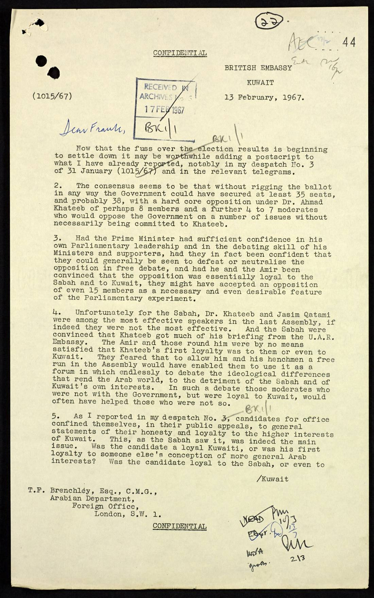
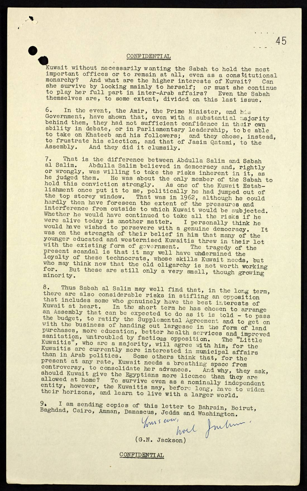
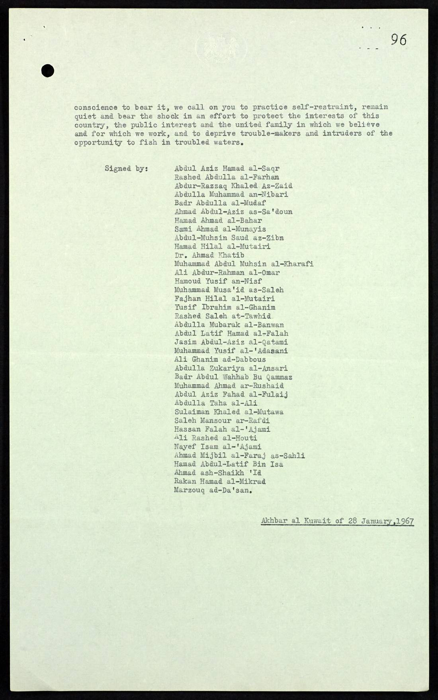
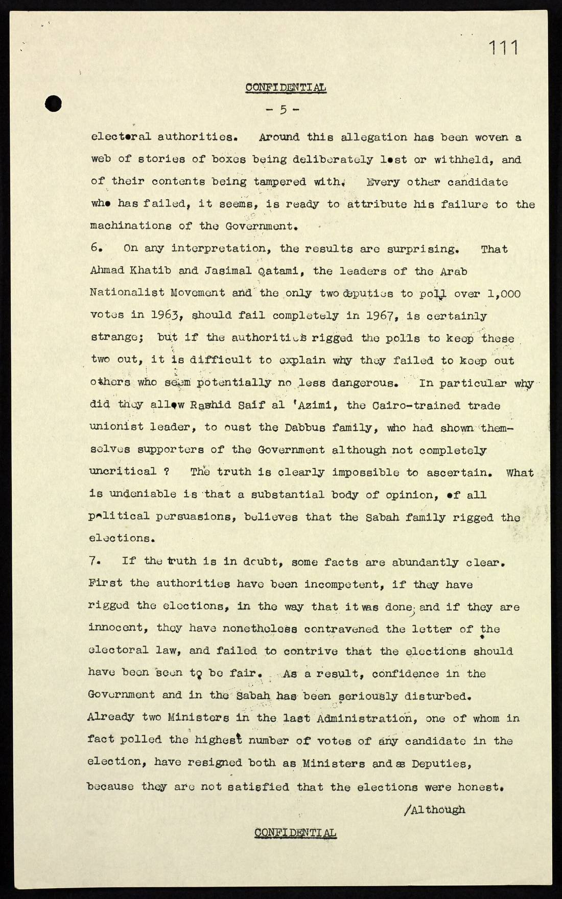
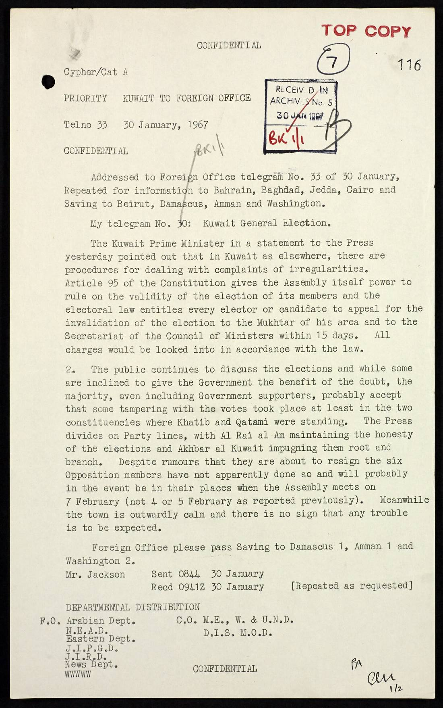

Jassim Qatami stands again with Dr Ahmad Khatib. He signs a public statement printed in Akhbar al-Kuwait on 28 January 1967. Both lose, and the Embassy reports that most people, even Government supporters, accept the votes were tampered with in their two constituencies.
Why it matters
The British record of the 1967 election that Kuwaitis still remember as rigged, and Jassim's full name, Jasim Abdul-Aziz al-Qatami, among the signers of the statement.
Who is meant
His name in this record, Jasim Abdul-Aziz al-Qatami, matches his line in the family tree.
Page copies

FCO 8/608, p. 45

FCO 8/608, p. 46

FCO 8/608, p. 98

FCO 8/608, p. 113

FCO 8/608, p. 118FCO 8/608, p. 123
Original text
Page 123: Of the eight Arab Nationalists deputies who resigned in December, 1965, are standing for election including Dr. Ahmad Khatib and Jassim Qatami (personalities 30 and 45, 1965 list).
Page 98, statement printed in Akhbar al Kuwait of 28 January, 1967, signed by, among others: … Dr. Ahmad Khatib … Abdul Latif Hamad al-Falah, Jasim Abdul-Aziz al-Qatami, Muhammad Yusif al-'Adasani …
Page 45: Unfortunately for the Sabah, Dr. Khateeb and Jasim Qatami were among the most effective speakers in the last Assembly, if indeed they were not the most effective.
Page 46: … they chose, instead, to frustrate his election, and that of Jasim Qatami, to the Assembly. And they did it clumsily.
Page 113: That Ahmad Khatib and Jasim al Qatami, the leaders of the Arab Nationalist Movement and the only two deputies to poll over 1,000 votes in 1963, should fail completely in 1967, is certainly strange …
Page 118: … the majority, even including Government supporters, probably accept that some tampering with the votes took place at least in the two constituencies where Khatib and Qatami were standing.
English translation
الصفحة ١٢٣: من بين النواب القوميين العرب الثمانية الذين استقالوا في ديسمبر ١٩٦٥، يترشح للانتخابات د. أحمد الخطيب وجاسم القطامي (الشخصيتان ٣٠ و٤٥ في قائمة ١٩٦٥).
الصفحة ٩٨، بيان نشرته أخبار الكويت في ٢٨ يناير ١٩٦٧، ومن الموقعين عليه: … د. أحمد الخطيب … عبداللطيف حمد الفلاح، جاسم عبدالعزيز القطامي، محمد يوسف العدساني …
الصفحة ٤٥: لسوء حظ آل الصباح، كان د. الخطيب وجاسم القطامي من أكثر المتحدثين تأثيرا في المجلس السابق، إن لم يكونا الأكثر تأثيرا.
الصفحة ٤٦: … فاختاروا بدلا من ذلك منع انتخابه وانتخاب جاسم القطامي إلى المجلس، وفعلوا ذلك بطريقة خرقاء.
الصفحة ١١٣: إن فشل أحمد الخطيب وجاسم القطامي، قائدي حركة القوميين العرب والنائبين الوحيدين اللذين حصلا على أكثر من ألف صوت عام ١٩٦٣، فشلا تاما عام ١٩٦٧ أمر غريب بالتأكيد …
الصفحة ١١٨: … والأغلبية، ومنهم مؤيدو الحكومة، يقبلون على الأرجح بأن شيئا من التلاعب بالأصوات حدث على الأقل في الدائرتين اللتين ترشح فيهما الخطيب والقطامي.
Notes
The statement on page 98 was published in Arabic; the names here are the British transliteration.
Others named
Dr Ahmad Al-Khatib
Sources
The National Archives, London, digitised by the Arabian Gulf Digital Archive (agda.ae). Images reproduced by permission of The National Archives, London, England.
Archive reference
FCO 8/608 · Elections
How this text was made: Typed from the archive's own text reading of the scan, corrected against the scan where the reading was garbled. … marks text left out. Arabic translation by Claude; please review.